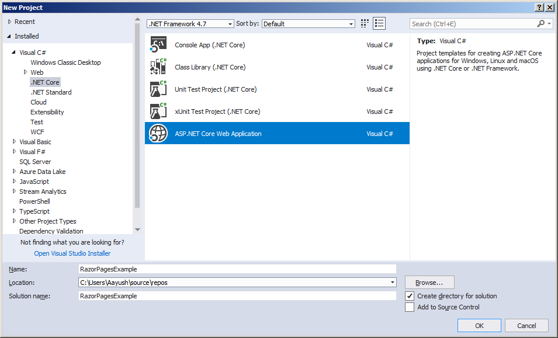
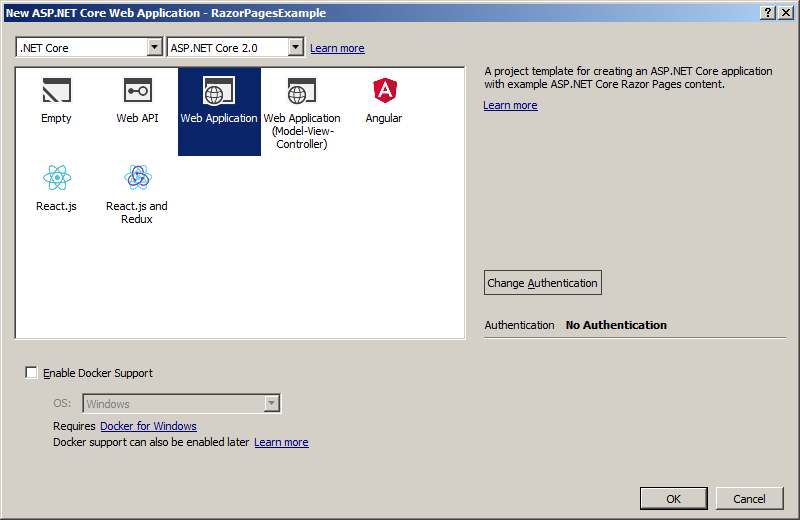

This article will demonstrate you about how to perform CRUD operations in Razor Page which introduced Asp.Net Core 2 using Dapper and Repository Pattern.
To complete this demonstration in a simple manner, we will follow some steps as below.
Step 1: Create Razor Page in Asp.Net Core 2
Step 2: Create Database and Table
Step 3: Install Dapper
Step 4: Create Repository Class and Interface with Required Entity
Step 5: Create Connection String and get it on Repository Class
Step 6: Create Razor Page for CRUD Operations
Step 7: Implement Code in Razor Pages for performing CRUD Operations
Now we have defined six steps to complete this practical demonstration. So, let’s move to step by step and complete the task.
STEP 1: Create Razor Page in Asp.Net Core 2
To create Asp.Net Core 2 Razor Page project, open Visual Studio 2017 version 15.3 and above and make sure you have installed .Net Core SDK 2.0 with your system. If you don’t have this configuration with your system, please update your Visual Studio and system with these configurations.
I hope, you have installed the lasted version of Visual Studio with .Net Core SDK 2.0, so open Visual Studio and Go to File Menu > choose New > select Project. It will open “New Project” windows. From the New Project windows, you have to choose .Net Core from the left panel and then from the center panel choose “Asp.Net Core Web Application” and provide the suitable name like “RazorPagesExample” and click to OK.

After clicking OK button, it will pop up with a new window from where we can choose the template for Razor Page.

From here, you have to choose “Web Application” to create Razor Page application and click to OK. It will take minutes or seconds to configure your project and finally, we have the project ready for demonstration.
STEP 2: Create Database and Table
Open SSMS [SQL Server Management Studio] and create new database name called it “TestDB” and inside that, you have to create one table that is called “Product” using following SQL scripts. Now we have a database and its corresponding table is ready.
--Create Database
CREATE DATABASE TestDB
GO
--Use Created Database
USE TestDB
GO
--Create Table "Product"
CREATE TABLE Product(Id INT PRIMARY KEY IDENTITY(1,1), Name VARCHAR(25), Model VARCHAR(50), Price INT)
--Insert dummy reocrd in table
INSERT INTO Product(Name, Model, Price) VALUES('Nokia 1', 'Nokia', 25000)
SELECT * FROM Product
--Create Database CREATE DATABASE TestDB GO --Use Created Database USE TestDB GO --Create Table "Product" CREATE TABLE Product(Id INT PRIMARY KEY IDENTITY(1,1), Name VARCHAR(25), Model VARCHAR(50), Price INT) --Insert dummy reocrd in table INSERT INTO Product(Name, Model, Price) VALUES('Nokia 1', 'Nokia', 25000) SELECT * FROM Product
STEP 3: Install Dapper
In one line, Dapper is micro ORM with high performance for SQL, MySQL etc.
It is a simple step to install Dapper. Right click on the project and choose “Manage NuGet Packages”. It will open NuGet Package Manager from there you can search packages which need to be installed. So, now we will search “Dapper” and installed it. After installation, it will be shown in the NuGet section which lies inside the “Dependencies” as follows in the project.
For more information on X, see ...